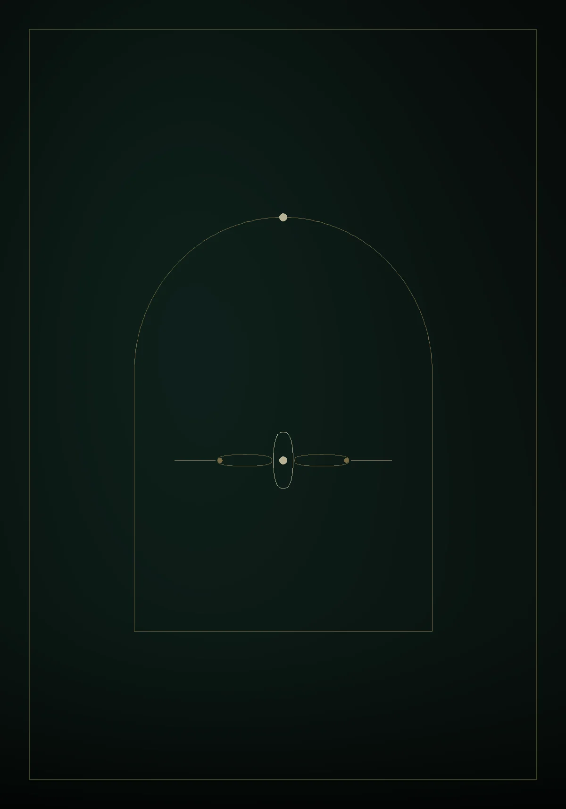

La fratrie
| Sexe | Femelle |
|---|---|
| Date de naissance | 12 juillet 2026 |
| Âge | 10 semaines |
| Robe | Black tortie |
| Poids au dernier contrôle | 1 240 g |
| Parents | Karrington Laguna Leo × Uriana du Temple des Fées |
| N° de portée LOOF | LOOF-2026-DEMO |
| Identification ICAD | 250 269 000000001 |
| Disponible à partir du | 4 octobre 2026 |
Les numéros LOOF et ICAD se saisissent depuis l’espace de gestion. Tant qu’ils sont vides, la fiche reste en brouillon et n’est pas publiée — c’est la règle imposée par la réglementation sur les annonces de cession.
Les générations précédentes se reprennent du pedigree LOOF. Elles permettent d’afficher le taux de consanguinité de la portée.
| Dysplasie de la hanche | À programmer Radiographie, cotation officielle |
|---|---|
| FIV / FeLV | Négatif Dépistage sanguin |
| HCM — test génétique MyBPC3 | N/N — indemne Test ADN, une fois pour la vie |
| HCM — échocardiographie | Normale Échographie, à renouveler |
| PK-Def — déficit en pyruvate kinase | N/N — indemne Test ADN, une fois pour la vie |
| SMA — amyotrophie spinale | N/N — indemne Test ADN, une fois pour la vie |
Un test ADN se fait une fois pour la vie : le génome ne change pas. Une échocardiographie ne vaut que pour le jour où elle a été faite, et se renouvelle tant que le chat reproduit. Une ligne encore vide s’affiche telle quelle, en or — nous ne masquons pas ce qui manque.
| Dysplasie de la hanche | À programmer Radiographie, cotation officielle |
|---|---|
| FIV / FeLV | Négatif Dépistage sanguin |
| HCM — test génétique MyBPC3 | N/N — indemne Test ADN, une fois pour la vie |
| HCM — échocardiographie | Normale Échographie, à renouveler |
| PK-Def — déficit en pyruvate kinase | N/N — indemne Test ADN, une fois pour la vie |
| SMA — amyotrophie spinale | N/N — indemne Test ADN, une fois pour la vie |
Un test ADN se fait une fois pour la vie : le génome ne change pas. Une échocardiographie ne vaut que pour le jour où elle a été faite, et se renouvelle tant que le chat reproduit. Une ligne encore vide s’affiche telle quelle, en or — nous ne masquons pas ce qui manque.
- 12 juillet 2026 Naissance — quatre chatons, mise bas sans intervention
- 16 août 2026 Première vermifugation
- 23 août 2026 Sevrage commencé — pâtée kitten
- 6 septembre 2026 Identification ICAD et primo-vaccination
- 4 octobre 2026 Rappel de vaccination et deuxième vermifugation
- 4 octobre 2026 Âge légal de cession atteint — douze semaines
- À partir du 4 octobre Départ en famille, pedigree LOOF et contrat remis